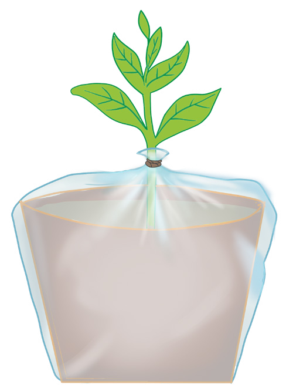

89
Student’s Book - Form Two

Biology for Secondary Schools
Activity 4.4: Demonstrate transpiration
Materials
Potted plant, knife, polythene bag, weighing scale, and rubber bands
Procedure
1.
Set up the experiment, as shown
in Figure 4.18.

Potted plant
Rubber band
Polythene bag
Figure 4.18: Experimental set-up to demonstrate transpiration
2.
Weigh the potted plant and record
its weight.
3.
Leave the set-up in location where
it can easily access the sunlight
4.
Weigh the potted plant after 7 days
and then calculate the change in weight.
5.
Write a short report of what you have observed.
Question
What caused the change in the weight of the potted plant after 7 days?
Types of transpiration
There are three types of transpiration, as explained below:
Stomatal transpiration
This occurs through the stomata on the leaves. It accounts for approximately
90% of the water loss in plants.
Cuticular transpiration
This occurs through the cuticle of leaves. The cuticle is a waxy layer that covers the surface of leaves. A thick cuticle prevents excessive loss of water.
Lenticular transpiration
This occurs through the lenticels.
Lenticels are pores found on the bark of stems or roots in woody plants.
Factors affecting the rate of transpiration
The rate of transpiration in plants is affected by plant features as well as environmental factors.
Plant features
Plant features that affect the rate of transpiration include the following:
(i)
The size of the leaves: A large
leaf has more stomata than a small
leaf. Therefore, plants with large leaves lose more water than those with smaller leaves.
(ii) An extensive root system: Plants
that have extensive roots absorb
more water and can therefore lose
more water than those with fewer roots.
08/04/2026 10:18:27